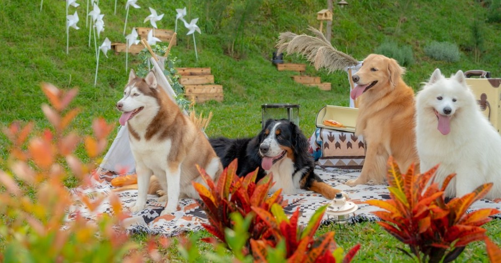

出發前必做：確認營區政策
是否允許、是否需要加價、是否有牽繩規定，請以預約當下公告為準，文章無法替代個案規範。
現場禮儀三件套
- 牽繩與胸背：避免追逐野生動物或驚嚇他人
- 清潔：自備拾便袋，維護草地與步道
- 音量：吠叫長時間影響他人時，先帶離現場安撫

你準備好了，不代表環境也準備好了；先讀規範、再談浪漫。
是否允許、是否需要加價、是否有牽繩規定，請以預約當下公告為準，文章無法替代個案規範。
寵物友善露營的比較，不能只看『可不可以帶毛孩』，而要拆成四個層次：第一是規範透明度（體型、數量、公共區域活動規則）；第二是空間安全（車道、人流、夜間照明）；第三是清潔與異味管理（是否提供清潔包、是否有明確罰則）；第四才是住宿舒適度。實務上最常發生的爭議，通常來自規範寫得太粗略，導致飼主與營方對『可上床、可進餐區、可脫繩』理解不同。
若是第一次帶毛孩過夜，建議把行前準備分成『行為管理』與『環境適應』兩條線並行：行為管理要先完成籠內休息、短時間離開、牽繩回應；環境適應則要提前測試外出水碗、便袋、夜間保暖墊與止滑墊。到場後先散步熟悉路線，再進帳內安置，通常能大幅降低吠叫與焦慮。市場上寵物友善服務也在升級，常見包含寵物清潔組、指定活動區、寵物加購清潔費、以及破壞賠償規則；越完整的公告，越能幫旅客提前判斷是否適合。
選擇上可把自己需求寫成清單：是否一定要草地放電？是否能接受公共區牽繩？是否需要近醫療據點？這樣比單看網美照片更實際。
| 品牌／場域 | 常見公開價格帶（雙人） | 特色重點 | 適合族群 |
|---|---|---|---|
| 揪好森 Joyforest（桃園楊梅） | 依房型／檔期詢價 | 少帳包場、雙圓頂帳、森林草地與彈性活動動線 | 重視隱私、希望客製流程的小團體 |
| 寨酌然野奢庄園（苗栗） | 約 NT$6,800～10,800（帳型與平假日） | 野奢帳型＋草地公共區，寵物規範公開清楚 | 偏好風格住宿、願意配合規範旅客 |
| 丹內丹內野奢莊園（新北） | 約 NT$6,500～10,000（專案制） | 近郊可達性高，常見寵物同行公告與加購條件 | 週末短天數、想降低移動成本的家庭 |
| 黃金梯田露營地（苗栗） | 約 NT$5,000～8,600（房型／專案） | 梯田景觀與戶外草地，常見毛孩同行方案 | 偏好自然景觀且重視散步路線者 |
| 遠山望月（高雄） | 約 NT$5,800～9,800（日期與房型） | 南部山景系豪華露營，常見寵物友善條件 | 南部旅客或長距離環島行程 |
以上資訊依 2026/04 公開頁面與旅遊平台可查資料整理，主要用途是協助前期篩選與行程規劃，不取代最終報價與入住條款。建議出發前 7～14 天再次確認最新公告。